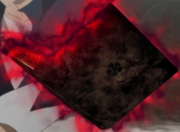
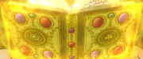

Grimórios
Um grimório é uma das principais fontes de poder dos Cavaleiros Mágicos e de outros magos. Grimórios são livros que permitem que seus usuários lançem feitiços muito mais avançados do que suas próprias habilidades mágicas naturais. Grimórios são itens mágicos que aumentam muito a habilidade do usuário de usar magia. Eles geralmente são concedidos aos usuários durante uma Cerimônia de Aceitação do Grimório. Eles também servem como um registro escrito para todos os feitiços de um usuário.
Suas características variam de acordo com cada usuário, como no tamanho e grossura e na cor da aura que manifestam ao seu redor, quando usados. Curiosamente os cidadãos do Reino Clover recebem grimórios que possuem um trevo na capa, sendo que cada uma de suas folhas tem um significado: amor, esperança e fé.
Ainda há os raríssimos e lendários Grimórios do Trevo de Quatro Folhas, tendo imenso poder e na sua quarta folha habitando o "bom agouro". Magos do Reino Diamond, ao invés do trevo, têm insígnias de diamante em suas capas frontais. No Reino Heart os grimórios dos magos possuem insígnias de coração. No Reino Spade os grimórios dos magos possuem insígnias de espada. Como os grimórios estão conectados aos seus donos, os magos não podem usar o grimório de outro, e estes se dissolvem quando seus donos morrem.
Grimórios de trevo de cinco folhas são as exceções conhecidas. Conhecido como Grimórios do Desespero, estes eram antigos grimórios do trevo de quatro folhas que foram corrompidos pelo profundo desespero e ódio de seus donos, e se tornam conectados aos demônios, que usam os livros para manifestar seus verdadeiros poderes.
Grimórios
Grimórios
MÁGIA
USUÁRIO

Anti-Mágia
Asta

Mágia de Luz
Augustus